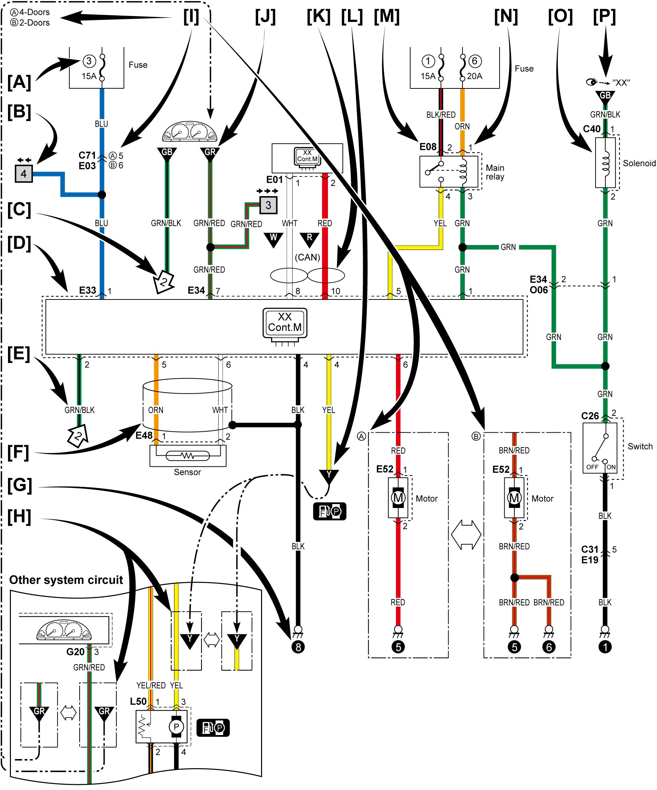

9A
| How to Read System Circuit Diagram |
The circuit diagram is designed so the current flows from the top of the diagram (power source) to the bottom of the diagram (ground) as if giving an image of water flow.
[A]: Fuse No.
[B]: Circuit Jumping Page / Direction
NOTE:
This means “Jump to the page directed with the arrow(s) by their number”.
(For example: “Two arrows directing left” means “Jump to two pages before”.)
You will find the same symbol with the arrows directing opposite in the referenced page. The circuit continues between the symbols.
[C]: Circuit Jumping Point / Direction
NOTE:
The circuit continues to the same symbol with opposite direction within the page.
You will find the other symbol in arrow direction.
[D]: Terminals-in-One-Connector Mark
[E]: Wire Color
[F]: Shield Wire
[G]: Ground Point
[H]: “From” or “To” (With ID Letter (s))
[I]: Specification Variation
The white arrow between A and B means “or”.
[J]: “From” (With ID Letter (s))
[K]: Twisted wires (Both CAN lines and Non-CAN lines)
[L] “To” (With ID Letter (s))
[M]: Connector Code
[N]: Terminal No.
[O]: Symbol Mark
[P]: “SEE” Mark

 "Expand image")